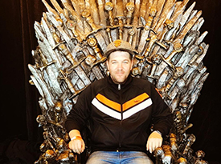

About Me
Hi! I am Jeff. I think coding is super but I also enjoy photography, video games, playing with my dog and watching Game of Thrones. Well, enough about me. Here's some DJ Kahled Ipsum. Major key, it’s the ones closest to you that want to see you fail. You smart, you loyal, you a genius. Mogul talk. The key is to enjoy life, because they don’t want you to enjoy life. I promise you, they don’t want you to jetski, they don’t want you to smile. Eliptical talk. The key to more success is to get a massage once a week, very important, major key. You do know, you do know that they don’t want you to have lunch. I’m keeping it real with you, so what you going to do is have lunch.